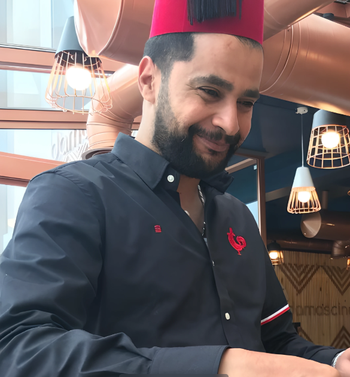
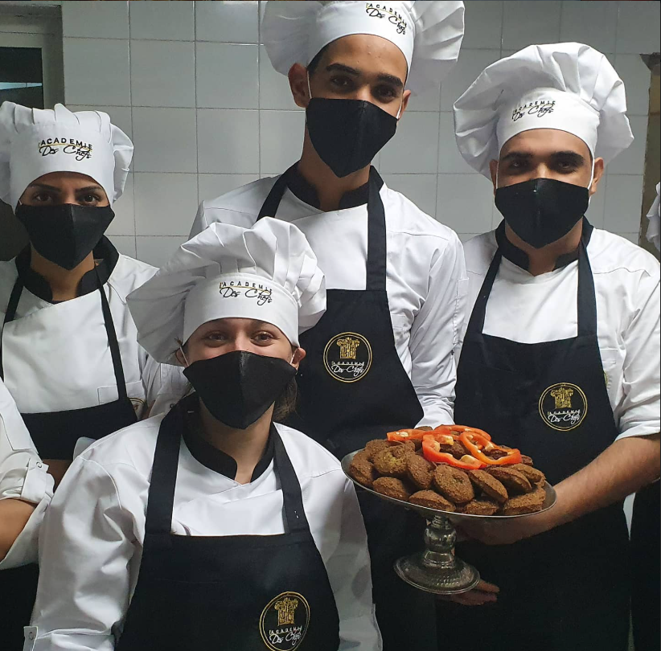
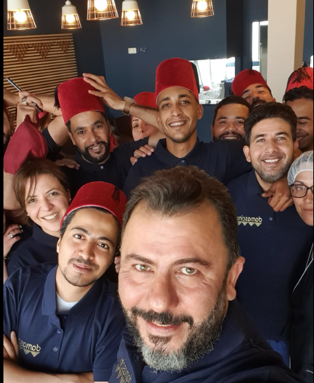

Bienvenue chez Damascino, un restaurant où les saveurs authentiques de la cuisine orientale se mêlent à un savoir-faire raffiné pour offrir à nos clients une expérience gustative unique. Nous mettons un point d’honneur à utiliser des ingrédients frais et de qualité afin de vous faire voyager à travers des plats riches en goût et en tradition.
Qualité : Nous sélectionnons avec soin des ingrédients frais et de qualité afin de garantir l’authenticité et l’excellence de chaque plat.
Passion : Du chef à l’équipe en salle, chacun partage la même passion pour la cuisine orientale et l’art de recevoir.
Respect : Nous respectons nos clients, nos traditions culinaires et notre environnement pour offrir une expérience conviviale, responsable et mémorable.

Notre chef principal, isac , est un passionné de cuisine orientale. Avec plus de 10 ans d'expérience, il crée des plats raffinés et délicieux qui font la renommée de notre restaurant.

Notre brigade est professionnelle, attentive et passionnée. Elle veille à préparer des plats de qualité pour rendre chaque visite agréable et mémorable.

Nos serveurs sont attentifs, professionnels et toujours à l’écoute de nos clients. Ils veillent à offrir un service chaleureux et soigné afin de rendre chaque visite agréable et mémorable.
"Food is delish 🤤 service is excellent . The waiters are very kind and helpful place is also very clean a variety of meals offered compared to the restaurant in menzah i highly recommend 👌"
"Very happy to find a place of quality and service, very nice place, great service and great food. Good job."